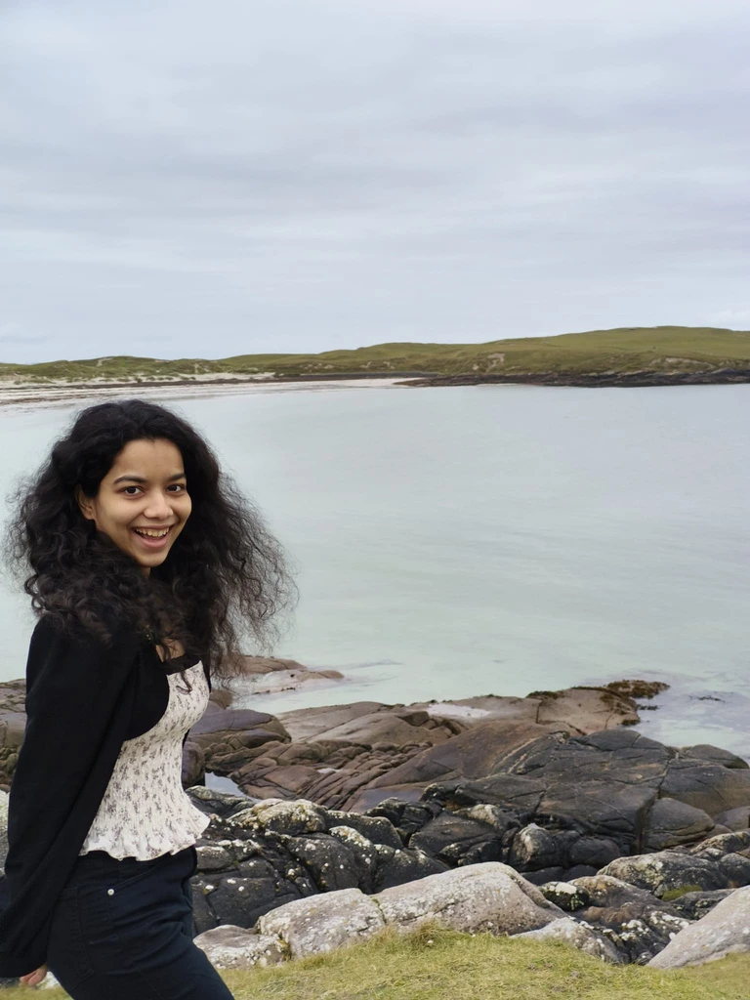
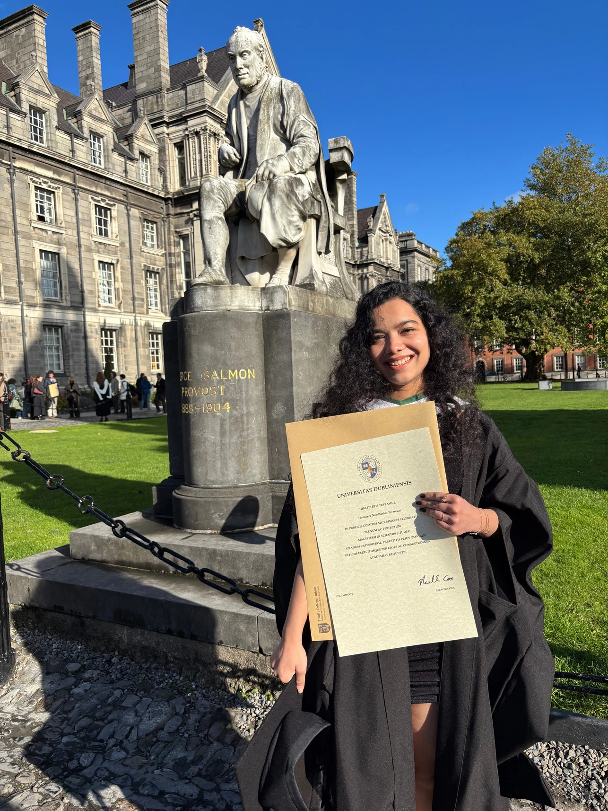
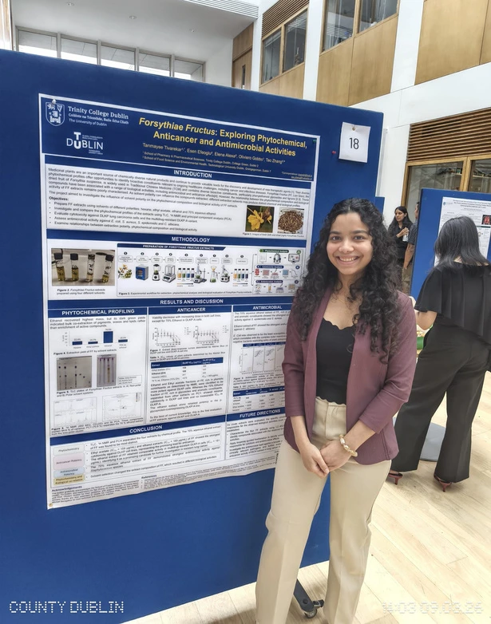
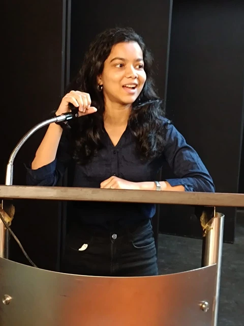
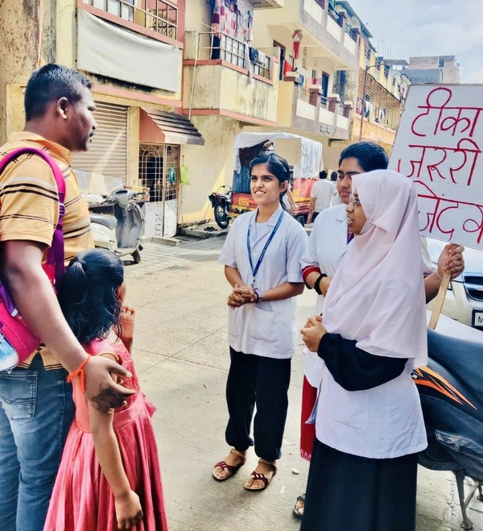
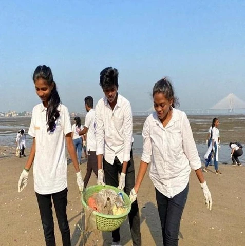

2025 — 2026 · IRELAND
M.Sc. Pharmaceutical Sciences
Trinity College Dublin
First Class Honours (1:1) 70%Hello, I’m Tanmayee Tivarekar.
A Pharmaceutical Sciences graduate combining scientific curiosity,hands-on research, and diverse industry experiences to make a Meaningful Impact in Industry.


01 / THE PERSON BEHIND THE SCIENCE
From Mumbai to Dublin, my journey has been shaped by new beginnings, unexpected lessons and the people I’ve worked with.
I’m a Pharmaceutical Sciences graduate with a passion for research, a commitment to quality, and a curiosity that extends beyond the laboratory. This journey has been defined by a relentless pursuit of knowledge and a deep appreciation for the human element in science.
Along the way, I found that being a professional also means listening well, communicating clearly and showing up for the people around you.
Read my portfolio02 / LEARNING BY DOING
Two countries. Different perspectives.
One continuous willingness to learn.
Trinity College Dublin
First Class Honours (1:1) 70%University of Mumbai
First Class Honours (1:1) · Ranked in Top 10Technological University Dublin, Ireland
Helping two batches of each 20+ undergraduate students turn theory into safe laboratory practice.
Knowledge matters most when you can help someone else understand it.
03 / MY SCIENTIFIC TOOLKIT
From a careful first extraction to a defensible result.
A hands-on toolkit, developed through practice.
✷ Select a technique to see where I’ve used it.
04 / IDEAS INTO ACTION
A selection of the projects that turned
my curiosity into hands-on investigation.

TRINITY COLLEGE DUBLIN · 2026A work on Forsythiae fructus.
Can different extraction solvents reveal compounds with promising biological activity?
I investigated four solvent extracts of Forsythiae fructus and independently cultured DLKP and DLKP-A lung cancer cell lines to assess anticancer activity, then tested the extracts for antimicrobial effects against three bacterial strains and one fungal strain.
05 / MORE THAN A LAB COAT

01Standing behind a microphone taught me to express ideas confidently, listen to different perspectives and step outside my comfort zone.
CONFIDENCE & CREATIVITY
02Community work helped me understand that healthcare is as much about people as science. Empathy, patience and cultural awareness matter.
EMPATHY & CONNECTION
03Beach clean-ups taught me the value of showing up, taking responsibility and working together, without expecting recognition.
INITIATIVE & RESPONSIBILITY✷“My education taught me what I could know.
These experiences taught me how I could contribute.”
06 / THE NEXT CHAPTER
I’m exploring opportunities in pharmaceutical sciences, biotechnology, quality control, quality assurance and laboratory research in Ireland.
If you value curiosity, integrity and a willingness to keep learning, I’d love to connect.